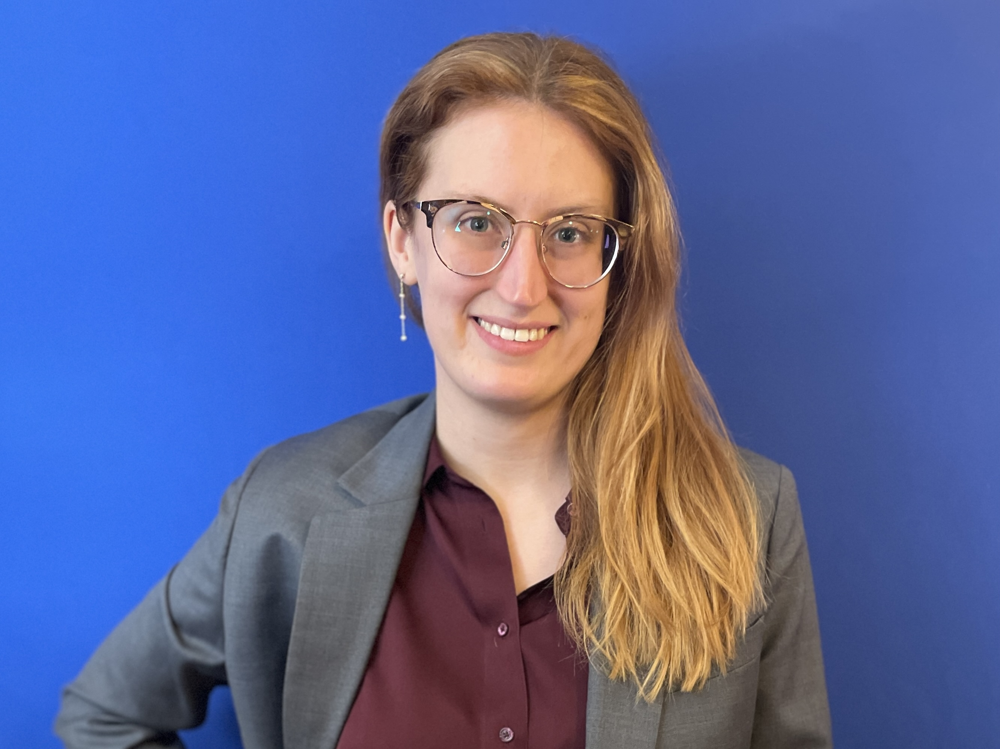

Emily Cairncross
I am a Mathematical Computer Science (MCS) doctoral candidate at the University of Illinois at Chicago (UIC). I am transitioning into Data Science/Analysis and looking for jobs in Chicago or remote. My industry resume can be found here, and I can be reached at egcairncross@gmail.com. My Ph.D. advisor is Dhruv Mubayi. My academic CV can be found here, and I can be reached at emilyc10@uic.edu. I expect to graduate in Spring 2026.

I worked as a Modeling & Analysis Intern at Carbon Solutions in June-July 2023 and have participated in Data Science bootcamps through both the Internship Network in the Mathematical Sciences and the Erdős Institute.
I co-organized the weekly Graduate Student Combinatorics, Algorithms, and Probability Seminar (GCAPS) with Clayton Mizgerd in 2024-2025, I have been a member of Symbols of Inclusion throughout my time at UIC, and I served as co-president of the Math Graduate Student Assocation (MGSA) in 2022-2023.
My office hours for Spring 2026 are 2-3pm on Tuesdays and 3-4pm on Thursdays in the MSLC.
Teaching
- Spring 2026: MCS 160 Introduction to Computer Science
- Fall 2025: MATH 160 Finite Math for Business
- Spring 2025: MCS 275 Programming Tools and File Management, MCS 360 Intro to Data Structures
- Fall 2024: MATH 160 Finite Math for Business
- Fall 2023: MATH 180 Calculus I
- Fall 2022: MATH 160 Finite Math for Business
- Spring 2022: MATH 110 College Algebra
- Fall 2021: MATH 160 Finite Math for Business
Papers and Preprints
- Inducibility of rainbow graphs, with Clayton Mizgerd, Dhruv Mubayi (27 pages), published in Mathematical Proceedings of the Cambridge Philosophical Society (2025).
- Ordered and colored subgraph density problems, with Dhruv Mubayi (17 pages), published in SIAM Journal on Discrete Mathematics, Vol. 39, No. 1 (2025).
- Nationwide cost and capacity estimates for sedimentary basin geothermal power and implications for geologic CO2 storage, with J. Ogland-Hand, B. Adams, R. Middleton (11 pages), published in Frontiers in Energy Research, Vol. 12 (2024).
- Throttling for standard zero forcing on directed graphs, with J. Carlson, P. Hollander, B. Kitchen, E. Lopez, A. Zhuang (27 pages), published in The Australasian Journal of Combinatorics, Vol. 84, Part 1 (2022).
- Classifying toric surface codes of dimension 7, with S. Ford, E. Garcia, K. Jabbusch (12 pages), published in Involve, Vol. 14, No. 4 (2021).
(Photo credit to
Amelia Pompilio.)